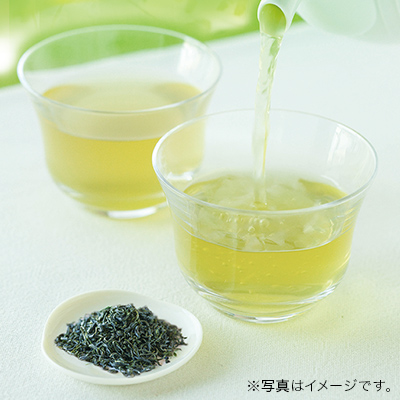
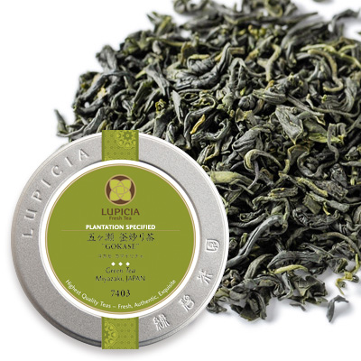

LUPICIA 7403 · g13107403
고카세 덖음차
五ヶ瀬 釜炒り茶
ゴカセ カマイリチャ


すっきりとした清々しい香り立ちと、渋みが少なく透明感のあるクリアな味わいが特徴です。
釜炒り茶の第一人者である興梠(こうろぎ)さんが、農薬を一切使わずに自然の力で育った元気な茶葉から作ったお茶です。
日本で１％未満しか生産されていない釜炒り茶の希少な味わいを、ぜひお楽しみください。
【釜炒り茶とは】
釜炒り茶は摘みたての生葉を鉄釜で炒って作られます。
蒸して作る一般的な煎茶と比較して、はっきりとした香り立ちと渋みの少ないクリアな味わいが特徴です。
炒ることで引き出される茶葉本来の豊かな香りに、「釜香」（かまか）と呼ばれる特有の香りが加わり、軽やかながら同時に奥深い余韻を生み出します。くりっと丸まった茶葉が特徴です。
釜炒り茶は中国古来の製法で、九州へ伝わったとされています。
日本で生産されるお茶の中でも、釜炒り茶は１％未満しか生産されておらず、大変希少なお茶です。
【生産者】
宮崎県五ヶ瀬町の生産者、興梠洋一さんは、全国茶品評会農林水産大臣賞をはじめ、幾多の賞を受賞されている釜炒り茶の第一人者です。
「おいしいお茶は、植物本来の自然な力から生まれる」と興梠さんは語ります。
興梠さんは力強く元気な茶葉を育てるため、30年以上、無農薬・有機栽培に取り組まれており、植物本来の力で育った茶葉が持つ自然の力を、熱した鉄釜ひとつで瞬間的に凝縮します。
【産地情報】
九州以外では目にする機会のない希少な釜炒り茶の最大産地は、宮崎県と熊本県の県境の山間地、五ヶ瀬町です。
日本最南端のスキー場がある五ヶ瀬町は、日本有数の標高の高い茶産地で朝夕の寒暖差が激しく、霧が立ちやすい特徴を備え、その気候条件と人の手を加えない自然なままの土壌が、上質のお茶を育みます。
- 상품번호
- 7403
- 상품 형태
- 50g 캔입
- 가격
- 1,130円
- 원재료
- 緑茶（日本）※商品の改定などにより、商品パッケージの記載内容が上記内容と一部異なる場合がございます。
- 원산지
- 日本※商品の改定などにより、商品パッケージの記載内容が上記内容と一部異なる場合がございます。
- 찻잎
- 4-5g
- 물
- 85-90℃
- 우림 시간
- 1-1.5分
- 우림 횟수
- 1-2回
다른 포장
보관된 상품 정보 갱신일: 2026-10-16